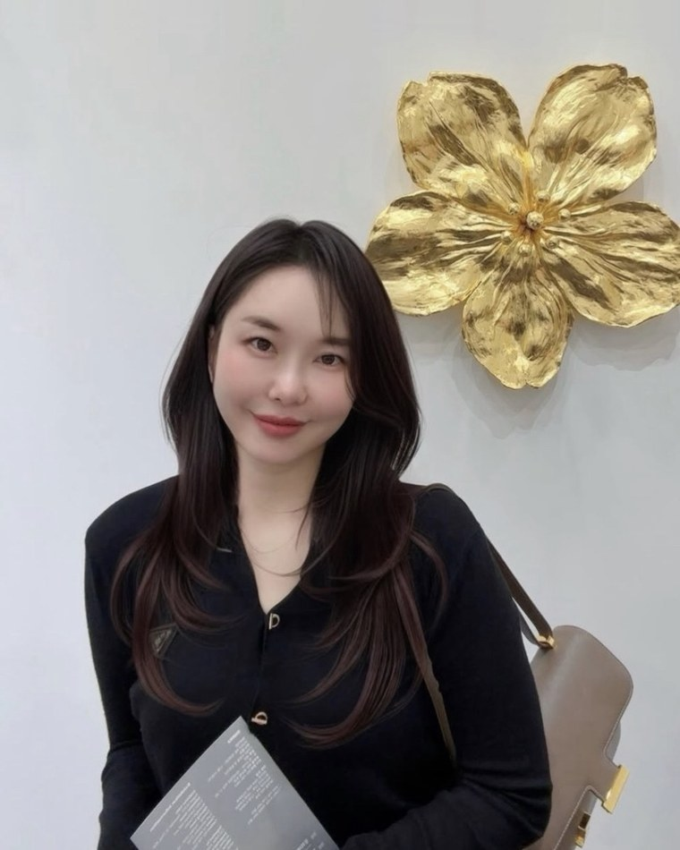

PCO & Event Agency · Busan, Republic of Korea
International conferences,planned from Busan.
LINSK is a professional conference organiser and event agency in Busan, Korea. We design and run international conferences and academic forums, K-culture and global student programmes, corporate events and city branding projects — led by Jihye Nam, PhD, with more than ten years of conference practice.
- Since 2013PCO practice
- Busan, KoreaBusanjin-gu, Busan
- English & KoreanWorking languages
- PhD, 2022International studies
Ten years on the floor, and a PhD about why it works.
Jihye Nam founded her first conference company, Namu Convention, in Seoul in 2013, and spent the following decade planning and running international conferences, academic forums and exhibitions in Seoul and Busan. In 2022 she completed a PhD in International Studies at Pusan National University — researching the industry she was working in.
Her 2020 paper on contact-free conventions was published in the Journal of Northeast Asia Tourism Research, and her book, Event Planning and Operations in the Age of AI, sets out the operating sequence this page is built on.
A conference is judged in the room, not in the proposal.
-
i
Practice before theory
Programme, budget, protocol, suppliers and the hours on site — learned by running the days, not by writing about them.
-
ii
Research in the room
A doctorate on international conferences and a published study of untact conventions. Claims are tested; the plan is written down.
-
iii
Busan as home ground
Venues, universities, public institutions and the student communities that make a global programme feel local — already in the room.
-
iv
One accountable lead
A small agency led by its founder. The person who takes the brief stays with it until the closing report.
Four lines of work, one operating standard.
Each can be taken as a full brief, or as the part of the work you are missing — the programme, the operations, or the people who make a room feel attended to.
-
01
International Conferences & Academic Forums
For universities, associations, research institutes and public agencies hosting in Korea: programme design, speaker and VIP protocol, registration and delegate services, venue and supplier contracts, and on-site operations.
-
02
K-Culture & Global Student Programs
In Busan, with the universities and institutions that host them: student fairs and hiring events, orientation and settlement programmes, talk concerts with local companies, culture nights, and campus and city tours.
-
03
Corporate & Brand Events
Launches, partner meetings, incentive programmes and anniversaries in Busan and Seoul — with venue and production partners, guest management and protocol, and one run-of-show everyone works from.
-
04
City & Local Branding
Programmes that place a district, a port or a neighbourhood in front of the audience it needs — designed with local institutions, businesses and residents rather than only about them.
Not sure which one you need? Describe the outcome you want — we will scope it.
Four movements, in writing.
From the first call to the closing report, every stage leaves a document the client can read, approve and keep.
-
01
Brief
A first call and a written brief: what the event has to achieve, who must be in the room, and which decisions are already fixed.
-
02
Design
Programme, budget and run-of-show on one page — with the choices a board or sponsor has to approve marked clearly.
-
03
Delivery
Contracts, rehearsals, supplier briefings and a named lead on site. The plan is tested before guests arrive.
-
04
Report
What happened, what it cost and what to change next time — documented, so the next edition starts further ahead.
A Korean agency that can be briefed in English.
-
Two languages
Briefs, programmes, run-of-shows and reports in English; venues, public officials and contracts handled in Korean.
-
Busan time, written record
Busan runs on KST (GMT+9). Decisions are kept in writing, so a call is never the only place a decision lives.
-
Direct contact
One address and one accountable lead — no account layer between the brief and the person delivering it.

Jihye Nam, PhD
Founder & CEO, LINSK Co., Ltd. · PCO
Jihye plans international conferences and the programmes around them: academic forums, association meetings, student fairs, corporate events and city projects. She founded Namu Convention in Seoul in 2013, completed a PhD in International Studies at Pusan National University in 2022, and founded LINSK in Busan in 2025 to connect that conference practice to the city's universities, institutions and international students.
She teaches MICE at Pusan National University's Graduate School of International & Maritime Studies and, from 2026, teaches in English at Youngsan University's Department of Tourism & Convention. She has written two books: Event Planning and Operations in the Age of AI, the operating method behind the work here, and the illustrated essay Still Blooming: Believe in the Flower Blooming Inside Me.
- PhD, International StudiesPusan National University · 2022
- MBAEwha Womans University · 2012
- Hotel & Event ManagementGriffith University, Australia
- Adjunct Professor, MICEPusan National University, Graduate School of International & Maritime Studies · 2023–
- Adjunct ProfessorYoungsan University, Dept. of Tourism & Convention · 2026–
- Certified Lifelong EducatorRepublic of Korea
- AuthorEvent Planning and Operations in the Age of AI · Still Blooming
Publications
- Event Planning and Operations in the Age of AI Monograph · English edition · LINSK Books, 2026 — the operating sequence behind the work on this page.
- Still Blooming: Believe in the Flower Blooming Inside Me Illustrated essay (《내 안에 피어나는 꽃을 믿어》) · thirty-two short texts with acrylic paintings, made in Busan · Korean–English edition · LINSK Books, 2026.
Questions international clients ask first.
What is a PCO, and does LINSK work as one?
A PCO — a professional conference organiser — plans and runs a conference on behalf of the organisation that owns it: programme, budget, venue, suppliers, registration, delegates and the days on site. Jihye Nam has worked as a PCO since founding her first conference company, Namu Convention, in Seoul in 2013. LINSK is her Busan-based PCO and event agency.
Where is LINSK based, and where do you work?
The office is in Busanjin-gu, Busan, Republic of Korea — 5F #502, 116 Dongcheon-ro. Most of our work is in Busan and Seoul, and we travel within Korea for projects elsewhere. International clients are briefed and managed in English.
What kind of events does LINSK plan?
Four lines of work: international conferences and academic forums; K-culture and global student programmes in Busan; corporate and brand events; and city and local branding programmes. Each can be taken as a full brief, or as the part of the work a client is missing.
Can you run a programme for international students or a K-culture group in Busan?
Yes. Student fairs and hiring events, orientation and settlement programmes, talk concerts with local companies, culture nights, and campus and city tours are a core part of our work in Busan, built together with universities and local institutions.
Do you work in English?
Yes. Briefs, programmes, run-of-shows and closing reports can be delivered in English, and Jihye Nam teaches and publishes in English. Korean is used for venues, public officials and contracts.
How do we start a project with LINSK?
Write to info@linsk.co.kr with the event, the city, the dates if they are fixed, the audience and the budget range you have in mind. You will receive a written reply setting out what we would need in order to scope the work.
Contact
Tell us what you are planning.
A conference, a forum, a student programme or a city project — send the outline and we will reply in writing with what we would need to scope it.
Write to info@linsk.co.kr- Office
- 5F #502, 116 Dongcheon-ro
Busanjin-gu, Busan 47247
Republic of Korea - info@linsk.co.kr
- Languages
- English · Korean
- Time zone
- KST (GMT+9)